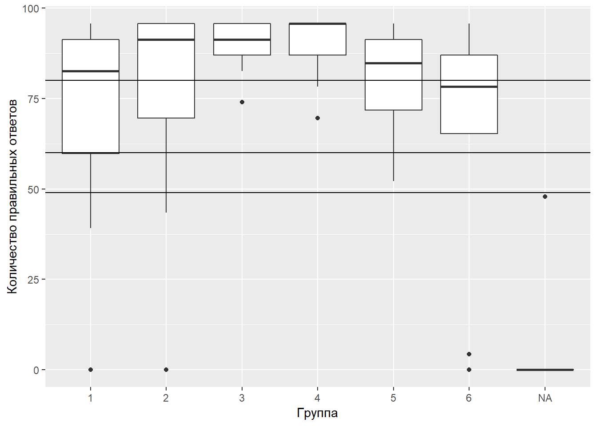

Важные задолженности!
Коллеги! В настоящий момент большая часть курса зарегистрировалась в системе Stepik, и прошли первый тест! Однако есть несколько человек, которые значатся на курсе, но пока не зарегистрировались. Если их ID не станет известен в ближайшее время, то за первый тест у них не будут начислены баллы.
Вот эти люди.
| Ф.И. |
|---|
| Доан Фан Зуи |
| Илясов Игорь |
| Кононов Матвей |
| Сурикова Татьяна |
| Филиппов Артем |
hw_res <- merge(class[, c("Name", "Group", "ID")], hw1, by = "ID")
hw_res <- hw_res[ , c(1,2,3, 6:39)]
Max <- length(names(hw_res)[8:ncol(hw_res)])
hw_res$Score_HW_1 <- apply(hw_res[ , 4:ncol(hw_res)], MARGIN = 1, FUN = sum)
hw_res$Score_HW_1[hw_res$Name == "Леняшина Мария"] <- hw_res$Score_HW_1[hw_res$Name == "Леняшина Мария"] + 1
hw_res$Score_HW_1 <- hw_res$Score_HW_1/Max*3
hw_res <- hw_res[, c("Name", "Group", "ID", "Score_HW_1")]
hw_res <- hw_res[order(hw_res$ID), ]
# write.table(hw_res, "clipboard", sep = "\t", row.names = F)
library(ggplot2)
ggplot(hw_res, aes(x = Group, y = Score_HW_1)) + geom_boxplot() + ggtitle("Количесвто баллов по каждой группе")
Группа №3 впереди всех! Остальные тоже молодцы…
–> –> –>
–> –> –>